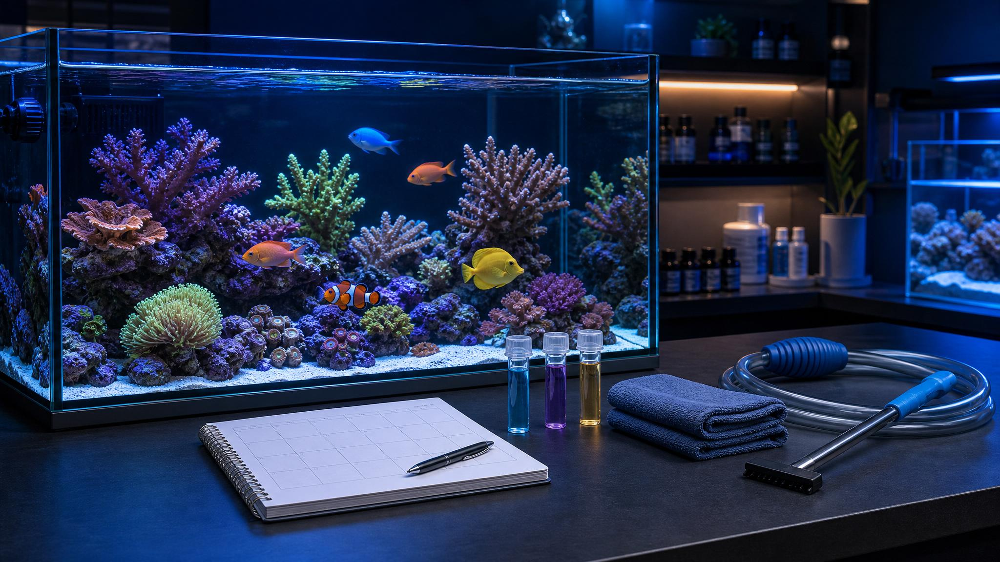

Keep the tank stable with a simple weekly rhythm: inspect livestock, test water, change a sensible amount, clean the glass, and service filters without disturbing the biological media.
The goal is steady water quality and early problem detection, not a deep clean that shocks the tank.
01
Inspect before touching
Look at the animals and equipment before feeding, scraping, or moving anything.
Check fish breathing, appetite, hiding, and fin condition
Confirm heater, filter, flow, and surface movement
Look for new algae, cloudy water, leaks, or salt creep
02
Test the trend
Use tests to see where the tank is heading instead of reacting only when livestock looks stressed.
Check ammonia, nitrite, nitrate, pH, and temperature
Check salinity and alkalinity for saltwater or reef tanks
Write down results so changes are easy to spot
03
Change water carefully
Small, consistent water changes are safer than occasional aggressive cleanouts.
Match temperature and conditioner or salinity before refilling
Siphon visible debris without tearing up the whole bottom
Top off evaporation with freshwater, not saltwater
04
Clean without resetting
Clear glass and restore flow, but protect the bacteria living in the filter and substrate.
Wipe algae from glass and rinse prefilters or sponges in tank water
Replace chemical media only when it is exhausted
Never replace all biological media at the same time
Keep it ready
Supplies to keep on hand
A small maintenance kit makes weekly care faster and keeps aquarium tools separate from household tools.
Water change
Bucket, siphon, conditioner
Use aquarium-only tools and prepare replacement water before anything is removed.
Dedicated bucket or water-change container
Gravel vacuum or siphon
Water conditioner, salt mix, or prepared saltwater as needed
Testing
Core test kits
Testing prevents guesswork and helps the store diagnose issues if you bring in a sample.
Ammonia, nitrite, nitrate, and pH
Thermometer and log sheet or notebook
Salinity, alkalinity, phosphate, and calcium for reef tanks
Cleaning
Glass and detail tools
Clean the visible buildup while avoiding soaps, sprays, and rough tools that can scratch acrylic or glass.
Algae pad or magnetic cleaner rated for the tank material
Turkey baster or small brush for debris pockets
Towel for spills, salt creep, and cabinet edges
Filter care
Media and flow checks
Keep water moving freely, but treat biological media like part of the livestock support system.
Replacement filter floss or cartridges when appropriate
Extra sponge, carbon, or specialty media
Brushes for intakes, impellers, tubing, and return nozzles

Care habit
Keep changes boring
A healthy aquarium usually improves through steady, repeatable care. If something looks wrong, test first, make one clear correction, and give the system time to respond before changing several things at once.